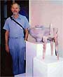
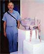
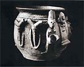
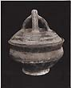
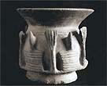
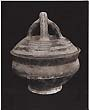
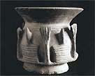
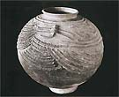

| A Saga of Synchronicity
Making a Film Documentary on African Ceramics
by Ron du Bois, Professor Emeritus of Art, Oklahoma State University
From the start, our Nigerian Saga was ruled by chance, by luck,
by indeterminacy. We were led by forces whose effects could never
have been foreseen or predicted, such as a chance meeting in a type
of local eatery called a buka. My wife and I were the only Westerners
in a group of Nigerians gathered there for a noon meal. They were
curious to know about us and what we were doing in a local buka.
We told them we were from Oklahoma State University, Stillwater,
Oklahoma, and were in Nigeria under Fulbright support. We were overwhelmed
when one of them said, "I graduated from O.S.U. with a Ph.D.
in Epidemiology." His wife and children lived in Stillwater!
While I had never seen or met him in our university community, our
paths crossed in that buka on the campus of the University of Ile
Ife (now Obafemi Awolowo University). This meeting (no doubt arranged
by the Eshu, the Yoruba deity of chance) proved to be crucial and
auspicious to the film documentation of Yoruba women potters.
  
His name was Dr. Julius Afolabi, an engaging Nigerian whose grandmother
was a potter. His uncle, Sam Osashure, was an official in the city
of Ilorin, a major pottery production center about 60 miles northwest
of Ile Ife. His mother lived in a small village close to Ilorin.
Julius visited her on a regular basis. Would we like to come along
and meet his mother and his uncle and visit Dada Compound, where
a community of women potters worked year round? His uncle could
introduce me to the potters and strike some sort of arrangement
regarding filming them at work. It was the perfect opportunity to
begin fieldwork.
 The
University of Ile Ife was our host institution and the heart of
the support system that made the project possible. The university
had an interesting and active ceramics program, headed by Ralph
Ibigbami, a potter, ceramic sculptor, and scholar. I would eventually
visit his home in Eshan Ekiti and record potters in that area. The
University of Ile Ife was our host institution and the heart of
the support system that made the project possible. The university
had an interesting and active ceramics program, headed by Ralph
Ibigbami, a potter, ceramic sculptor, and scholar. I would eventually
visit his home in Eshan Ekiti and record potters in that area.
 
My initial Fulbright proposal had been reviewed and approved both
by Professor Ibigbami and Dr. Roland Abiodun, Art Department Chair.
They reported to the Fulbright program that they would take responsibility
for our welfare and accommodations, even though these matters had
not yet been formally accepted by the slow-moving university administration.
Despite their efforts, living accommodations were not available.
Instead we were housed in the university hotel for nearly three
months before finally securing a regular apartment where we could
unpack our luggage and I could prepare for my field research.
 
During this time my wife, Thora, a pianist, became a valued member
of the highly active music department and I began to get my bearings
at the university. It was located a short way from the ancient city
of Ile Ife, the place where, according to Yoruba belief, all human
beings were created. The city is famous for its production of both
terra cotta and brass-cast images of Yoruba kings and queens during
the middle ages. It is the center of the Yoruba spiritual world.
 
I had to abandon my preconceptions on the first visit. The paved
streets, heavy traffic of buses, cars, trucks, taxis, and motorcycles
immediately dispelled the image of Ile Ife as an African city of
the past. Instead I found, as did the early Portuguese, that the
city was bustling with industry, energy and street life.
In
spite of the influence of Western religions, traditional Yoruba
religion was still vital. The ancient festivals were still being
performed. I was able to interview an Ifa priest – a revealing
experience in it's own right. As I videotaped daily life and festivals
in Ile Ife, I had no specific understanding of how the scenes would
be used, and several of them became important sections of the documentaries,
providing a striking contrast between contemporary city life and
the traditional pace and practices of the women potters.
The United States Information Service was a crucial part of our
support system. The Lagos office received our ten boxes of luggage
and the critical shipment of ECN (Eastman Kodak Color Negative)
16 mm film. These were then transferred to the Ibaden USIS office.
USIS personnel arranged for accommodations in Ibaden and the final
stage of our trip by car to the University of Ile Ife.
  
We had no transportation of our own and the prospect of buying
a car and driving in Nigeria was daunting. Eventually, by chance,
we did acquire a Volvo station wagon and I was able to make regular
trips to Ilorin. I even learned to drive in Lagos. The driving conditions
are so scary in that city that I preferred to maintain an illusion
of control and safety by claiming the wheel myself.
 The
initial trip to Ilorin was made in Julius' car. His mother welcomed
us with warm hospitality and a hearty bowl of famous Yoruba stew.
Then we visited Julius' uncle, Sam Osashure. He knew the head mistress
of the potters at Dada Compound and made arrangements on my behalf
for filming and videotaping throughout the compound. The head mistress
asked for and received a cash payment in return for this arrangement. The
initial trip to Ilorin was made in Julius' car. His mother welcomed
us with warm hospitality and a hearty bowl of famous Yoruba stew.
Then we visited Julius' uncle, Sam Osashure. He knew the head mistress
of the potters at Dada Compound and made arrangements on my behalf
for filming and videotaping throughout the compound. The head mistress
asked for and received a cash payment in return for this arrangement.
Once the word went out that payment had been made, the normally
reserved and camera-shy women allowed me complete freedom to roam
the compound, to photograph, and to film. Normally they do not welcome
strangers. They live in a closed society that protects their craft
secrets. They believe that if they share their craft, the ancestors
who taught them might not approve. Pottery is their only means of
livelihood and the processes are traditionally taught only to those
born into the hereditary profession of potter.
I
believe the women made an exception for me because of the way I
had gained admission, i.e., through influential Yoruba friends who
followed the correct procedures and spoke their language. Julius'
and Sam's negotiations and preparations were crucial to successfully
documenting this famous pottery community.
I needed a base of operations in Ilorin, food and shelter, and
a place to store my equipment. The United Church of West Africa
maintained economical living quarters in the city. Dr. Afolabi made
arrangements for me to stay there during the week until the project
was completed. On weekends I returned to the campus in Ile Ife to
visit my wife, and catch up on campus life. These arrangements worked
perfectly. My UCWA room was a fraction of the cost of a hotel. It
had a bed, table and chair, and most importantly, a shower. The
gates were closed at night, so it was a safe place to park my Volvo.
My schedule was the same, week after week. I got up, ate, picked
up Dr. Afolabi's brother, Shola, who was my translator, and went
to Dada Compound to observe, study, ask questions, and film until
sunset. Sometimes I gave a few of the potters a ride home. (They
usually walked to work in the morning and left the compound well
after dark, taking a bus home.)

I established rapport with the women in a number of ways. Initially,
rather than taking the large 16 mm camera into the compound, I began
shooting with my small 8 mm video camera. When they saw themselves
in the playback mode, they understood what I was doing, and the
ice was broken.
They understood I was a potter because I helped them with their
clay and wedging tasks. I was not able to keep up with them. Their
strength and stamina came from wedging clay every day since childhood.
As potters, they performed amazing feats of endurance and strength.
They must have thought it odd that a male was a potter. Yoruba culture
traditionally has been gender specific regarding work, insisting
that women perform tasks associated with hearth and home and that
men perform tasks outside the home. When questioned, master-potter
Alhaja said she was not aware that men were potters in Northern
Nigeria. She believed that custom and tradition call women to pottery,
yet couldn't think of any specific restriction against men becoming
potters. The question had never come up.

My contacts at the University of Ile Ife referred me to Dr. N.A.
Olaoye, a specialist in craft technologies at the University of
Ilorin. Much of the narration was based on the information and research
he provided.
It seems impossible to pick out any one of many interacting factors
of chance and luck as being most important, but the departure of
my department head, Rowland Abiodun, for the U.S. was a crucial
breakthrough. His leave of absence made it possible for him to loan
me his Volvo station wagon for over four months. The project would
have been far more difficult without Roland's trusty Volvo. I'm
happy to report that I was able to return it to him in better condition
than when he left.
 In
1988 I returned from Nigeria with 10,000 feet of 16 mm Eastman Kodak
Color Negative motion picture film. The film was developed in the
U.S. I also had considerable 8 mm videotape that was to prove extremely
valuable. With the advent of digital technology, we were able to
digitize both film and video for editing purposes. Without the digital
technology that came into use well after my return from Nigeria,
the documentaries in their present form would have been more complex
and expensive. In
1988 I returned from Nigeria with 10,000 feet of 16 mm Eastman Kodak
Color Negative motion picture film. The film was developed in the
U.S. I also had considerable 8 mm videotape that was to prove extremely
valuable. With the advent of digital technology, we were able to
digitize both film and video for editing purposes. Without the digital
technology that came into use well after my return from Nigeria,
the documentaries in their present form would have been more complex
and expensive.
> Next page: The
Documentary
Text and images courtesy of Ron
du Bois, Professor Emeritus of Art, Oklahoma State University
More Articles
|